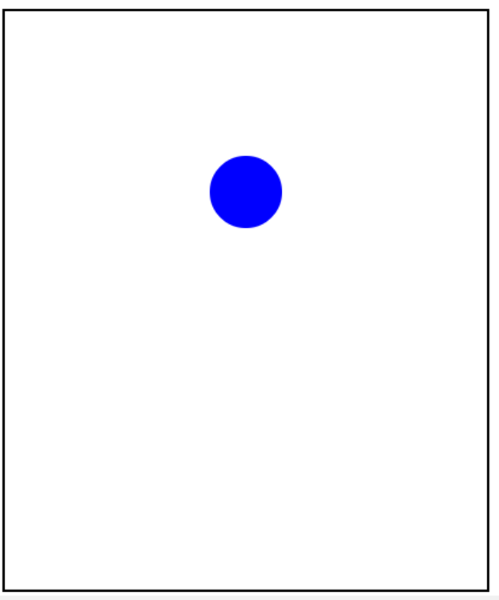

This is an example that we did in the video.
You are encouraged to play around with it, to see how it all works.
When you are done, click the arrow to go to the next problem.
這是我們在視頻中做了一個榜樣。我們鼓勵你玩它，看看它是如何工作的。當你完成後，單擊箭頭進入下一個問題。

// This program will add a blue circle
// with radius 30 and center at (100,50).
function start(){
var circle = new Circle(30);
circle.setPosition(200, 150);
circle.setColor(Color.blue);
add(circle);
}
//這個程序將添加一個藍色的圓圈
//半徑為30和中心（100,50）。
函數的開始（）{
變圓=新圓（30）;
圈子。設置位置（200，150）;
圈子。設置顏色（顏色。藍色）;
添加（圓）;
}